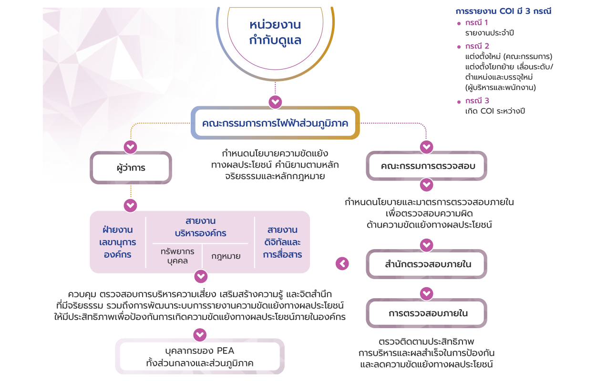
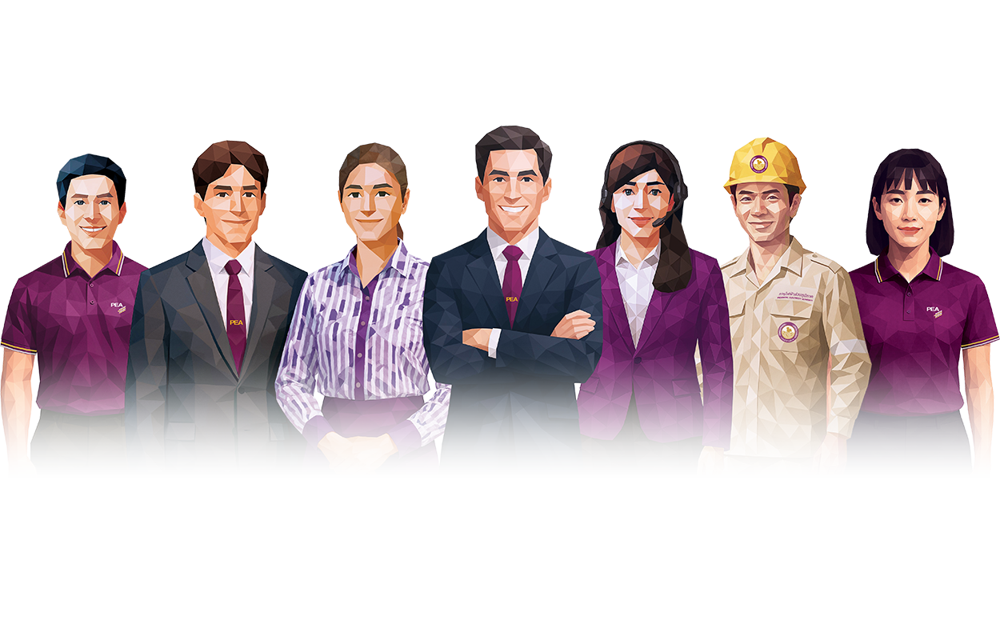
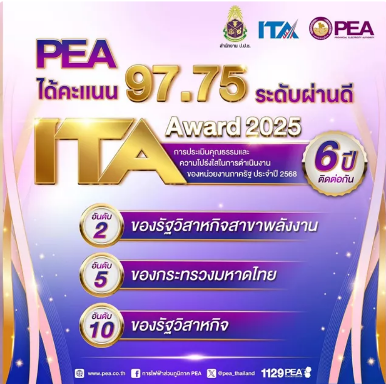

Governance
การกำกับกิจการและการดำเนินธุรกิจตามหลักธรรมาภิบาล (Business Conduct & Governance)
การไฟฟ้าส่วนภูมิภาคสำนักงานใหญ่รักษาสถานะการรับรองมาตรฐาน
ISO 22301: 2019
มีการบริหารความเสี่ยงตามมาตรฐาน
COSO ERM 2017
การละเมิดข้อมูลส่วนบุคคลจากภายในองค์กร
ไม่พบการละเมิด
ระบบความมั่นคงปลอดภัยทางไซเบอร์ตามมาตรฐาน
ISO/IEC 27001: 2022
การป้องกันผลประโยชน์ทับซ้อน
PEA ให้ความสำคัญกับการป้องกันความขัดแย้งทางผลประโยชน์ โดยผู้ที่จะได้รับการแต่งตั้งเป็นกรรมการในคณะกรรมการการไฟฟ้าส่วนภูมิภาค จะต้องไม่เป็นผู้มีส่วนได้ส่วนเสียในสัญญาที่ทำกับ PEA หรือในกิจการที่กระทำกับ PEA ไม่ว่าโดยตรงหรืออ้อม ตามที่กำหนดไว้ในพระราชบัญญัติการไฟฟ้าส่วนภูมิภาค พ.ศ. 2503 และที่แก้ไขเพิ่มเติม รวมถึงพระราชบัญญัติคุณสมบัติมาตรฐานสำหรับกรรมการและพนักงานรัฐวิสาหกิจ พ.ศ. 2518 และที่แก้ไขเพิ่มเติม นอกจากนี้ คู่มือการกำกับดูแลกิจการที่ดีและแนวทางปฏิบัติของ PEA กำหนดให้คณะกรรมการการไฟฟ้าส่วนภูมิภาคมีหน้าที่กำหนดนโยบายความขัดแย้งผลประโยชน์ ค่านิยมตามหลักจริยธรรมและหลักกฎหมาย พร้อมทั้งจัดตั้งคณะกรรมการตรวจสอบเพื่อทำหน้าที่ในการกำหนดนโยบายและมาตรการตรวจสอบภายใน เพื่อตรวจสอบความผิดด้านความขัดแย้งทางผลประโยชน์ พร้อมกันนี้ยังได้ควบคุมตรวจสอบการบริหารความเสี่ยง เสริมสร้างความรู้และจิตสำนึกที่มีจริยธรรม รวมถึงการพัฒนาระบบการรายงานความขัดแย้งทางผลประโยชน์ให้มีประสิทธิภาพ เพื่อป้องกันการเกิดความขัดแย้งทางผลประโยชน์ภายในองค์กร

การรับรู้การสื่อสารนโยบายและแนวปฏิบัติเกี่ยวกับการต่อต้านทุจริต

| กลุ่มพนักงาน | สัดส่วนการรับรู้ |
|---|---|
| กลุ่มปฏิบัติการ (Operations Group) | 97.02% |
| กลุ่มผู้เชี่ยวชาญ (Expert Group) | 99.08% |
| กลุ่มผู้บริหาร (Management Group) | 99.06% |
| คณะกรรมการ (Board) | 100% |
การฝึกอบรมหลักสูตรที่เกี่ยวข้องกับการต่อต้านทุจริต
| กลุ่มพนักงาน | สัดส่วนการฝึกอบรม |
|---|---|
| กลุ่มปฏิบัติการ (Operations Group) | 91.03% |
| กลุ่มผู้เชี่ยวชาญ (Expert Group) | 91.75% |
| กลุ่มผู้บริหาร (Management Group) | 92.38% |
| คณะกรรมการ (Board) | 100% |
รางวัลประเมินคุณธรรมและความโปร่งใสภาครัฐ โดย ป.ป.ช.

| ปี | คะแนน | ระดับ |
|---|---|---|
| 2564 | 97.37 | - |
| 2565 | 99.35 | - |
| 2566 | 95.58 | - |
| 2567 | 97.75 | - |
| 2568 | 98.37 | AA |